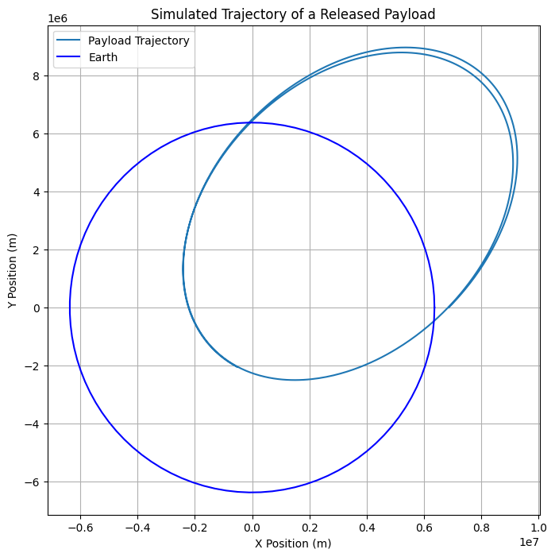
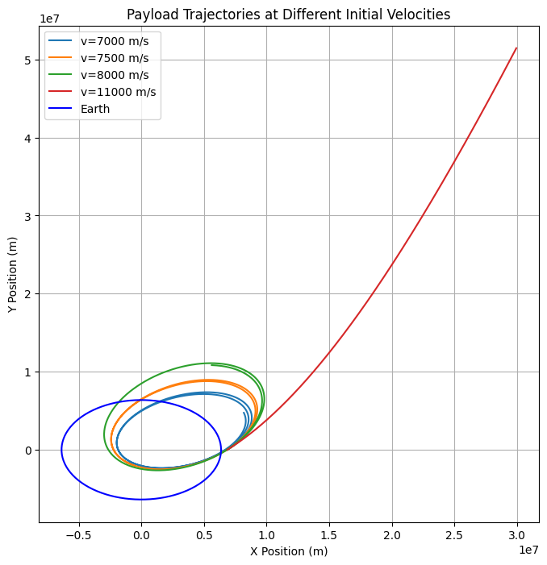
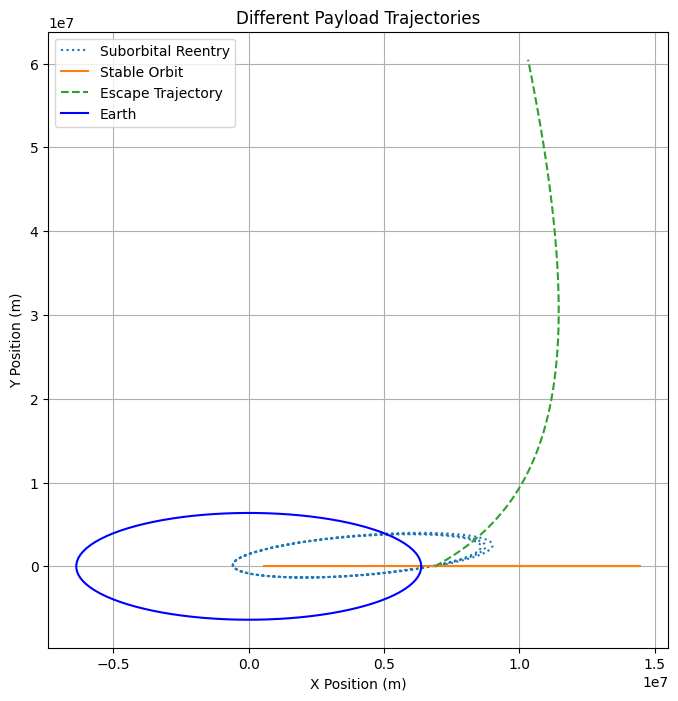

Problem 3
Trajectories of a Freely Released Payload Near Earth
Motivation
When an object is released from a moving rocket near Earth, its trajectory depends on initial conditions and gravitational forces. This scenario presents a rich problem, blending principles of orbital mechanics and numerical methods. Understanding the potential trajectories is vital for space missions, such as deploying payloads or returning objects to Earth.
Types of Possible Trajectories
A payload released from a moving spacecraft can follow different trajectories based on its initial velocity relative to Earth: 1. Elliptical Orbit: If the payload's velocity is below Earth's escape velocity but high enough to avoid immediate reentry, it follows an elliptical path. 2. Parabolic Trajectory: If the velocity equals escape velocity, the object follows a parabolic trajectory, never returning but not bound to another orbit. 3. Hyperbolic Escape: If the velocity exceeds escape velocity, the payload moves along a hyperbolic trajectory, permanently leaving Earth's gravity. 4. Suborbital Reentry: If the velocity is too low, the payload follows a downward arc and reenters Earth's atmosphere.
Mathematical Foundation
Newton’s Second Law and Newton’s Law of Universal Gravitation govern the motion:
[ F = m a ] [ F = \frac{G M m}{r^2} ]
From these, we derive the equation of motion:
where: - \( G \) is the gravitational constant, - \( M \) is the mass of Earth, - \( r \) is the radial distance from Earth's center, - \( \ddot{r} \) is the acceleration due to gravity.
The velocity required for different trajectories is: - Orbital velocity: \( v_1 = \sqrt{\frac{G M}{r}} \) - Escape velocity: \( v_2 = \sqrt{2} v_1 \)
Numerical Simulations of Payload Trajectory
Using Python, we solve the equations of motion numerically using the Runge-Kutta method.
1. Basic Trajectory Simulation

import numpy as np
import matplotlib.pyplot as plt
from scipy.integrate import solve_ivp
from scipy.constants import G
# Define Earth parameters
M_earth = 5.972e24 # kg
R_earth = 6.371e6 # m
# Define gravitational acceleration function
def gravity(t, y):
x, vx, y, vy = y
r = np.sqrt(x**2 + y**2)
ax = -G * M_earth * x / r**3
ay = -G * M_earth * y / r**3
return [vx, ax, vy, ay]
# Initial conditions (altitude, velocity, direction)
altitude = 500e3 # 500 km above Earth
v_initial = 7500 # Initial velocity in m/s
angle = np.radians(45) # Release angle
x0, y0 = R_earth + altitude, 0
vx0, vy0 = v_initial * np.cos(angle), v_initial * np.sin(angle)
# Solve trajectory
T_final = 10000 # Simulation time
sol = solve_ivp(gravity, [0, T_final], [x0, vx0, y0, vy0], t_eval=np.linspace(0, T_final, 1000))
# Extract solution
x, y = sol.y[0], sol.y[2]
# Plot results
plt.figure(figsize=(8, 8))
plt.plot(x, y, label="Payload Trajectory")
theta = np.linspace(0, 2*np.pi, 100)
plt.plot(R_earth*np.cos(theta), R_earth*np.sin(theta), label="Earth", color='blue')
plt.xlabel("X Position (m)")
plt.ylabel("Y Position (m)")
plt.legend()
plt.title("Simulated Trajectory of a Released Payload")
plt.grid()
plt.show()
2. Simulating Different Initial Velocities

def simulate_trajectory(v_initial, angle):
vx0, vy0 = v_initial * np.cos(angle), v_initial * np.sin(angle)
sol = solve_ivp(gravity, [0, T_final], [x0, vx0, y0, vy0], t_eval=np.linspace(0, T_final, 1000))
return sol.y[0], sol.y[2]
plt.figure(figsize=(8, 8))
for v in [7000, 7500, 8000, 11000]:
x, y = simulate_trajectory(v, np.radians(45))
plt.plot(x, y, label=f"v={v} m/s")
plt.plot(R_earth*np.cos(theta), R_earth*np.sin(theta), label="Earth", color='blue')
plt.xlabel("X Position (m)")
plt.ylabel("Y Position (m)")
plt.legend()
plt.title("Payload Trajectories at Different Initial Velocities")
plt.grid()
plt.show()
3. Visualizing Escape and Reentry Scenarios

plt.figure(figsize=(8, 8))
# Suborbital Reentry
x, y = simulate_trajectory(6000, np.radians(30))
plt.plot(x, y, label="Suborbital Reentry", linestyle='dotted')
# Orbital Motion
x, y = simulate_trajectory(7800, np.radians(0))
plt.plot(x, y, label="Stable Orbit", linestyle='solid')
# Escape Trajectory
x, y = simulate_trajectory(11200, np.radians(60))
plt.plot(x, y, label="Escape Trajectory", linestyle='dashed')
plt.plot(R_earth*np.cos(theta), R_earth*np.sin(theta), label="Earth", color='blue')
plt.xlabel("X Position (m)")
plt.ylabel("Y Position (m)")
plt.legend()
plt.title("Different Payload Trajectories")
plt.grid()
plt.show()
Applications in Space Exploration
- Satellite Deployment: Determines proper release velocities for stable orbits.
- Reentry Missions: Helps plan controlled payload returns to Earth.
- Interplanetary Travel: Analyzing how payloads can be transferred between celestial bodies.
Conclusion
The trajectory of a freely released payload depends on its initial velocity and position. Numerical simulations help predict outcomes, ensuring successful space missions.